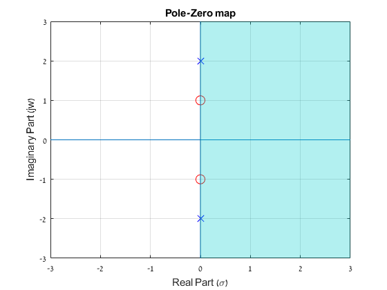
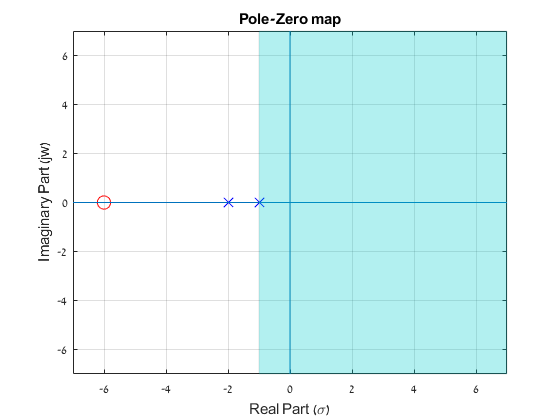
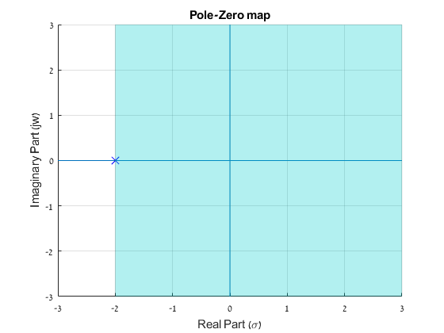
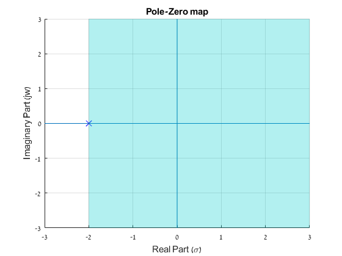
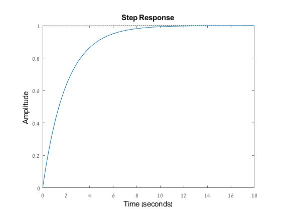
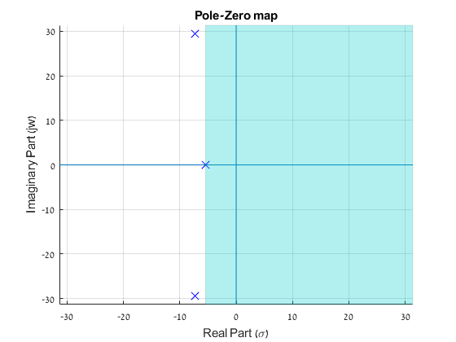
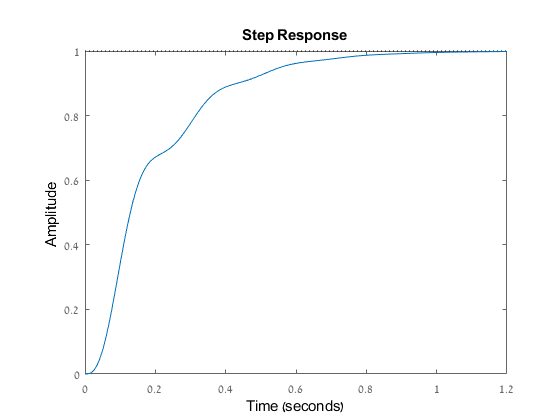

Contents
Students ID's
ID = 316098052; disp(ID)
316098052
1 Pole-Zero Plot
pzplot2([1 0 1],[1 0 4 ])
2 Solve the following problems
2.1
Y = [1 -1 6]; X = [0 1 1]; tf(X,Y) step(tf(X,Y)); pzplot2(X,Y);
ans =
s + 1
-----------
s^2 - s + 6
Continuous-time transfer function.
2.2
Y = [3 -2 6]; X = [2 1 -1]; tf(X,Y) step(tf(X,Y)); pzplot2(X,Y);
2.3
Y = [1 3 2]; X = [0 1 6]; tf(X,Y) step(tf(X,Y)); pzplot2(X,Y);
ans =
s + 6
-------------
s^2 + 3 s + 2
Continuous-time transfer function.
 2.4
Y = [1 4 4]; X = [0 0 1]; tf(X,Y) step(tf(X,Y)); pzplot2(X,Y);
ans =
1
-------------
s^2 + 4 s + 4
Continuous-time transfer function.
 
 5 First order system step response
T = 2
Y = [0 2 1]; X = [0 0 1]; tf(X,Y) step(tf(X,Y));
ans =
1
-------
2 s + 1
Continuous-time transfer function.
 T = 5
Y = [0 5 1]; X = [0 0 1]; tf(X,Y) step(tf(X,Y));
ans =
1
-------
5 s + 1
Continuous-time transfer function.
T = 10
Y = [0 10 1]; X = [0 0 1]; tf(X,Y) step(tf(X,Y));
ans =
1
--------
10 s + 1
Continuous-time transfer function.
The greater the coefficent of s, the slower the convergence of the function is.
6 A closed loop system
6.1
Y = [1 20 1000 5000]; X = [0 0 0 5000]; T = tf(X,Y); T_Y = Y; T_X = X; tf(X,Y)
ans =
5000
----------------------------
s^3 + 20 s^2 + 1000 s + 5000
Continuous-time transfer function.
6.2
[zeros,poles] = pzplot2(X,Y); zeros; poles;
6.3
Y = [1 20 1000 5000 0]; X = [0 0 0 0 5000]; tf(X,Y) [r,p,k] = residue(X,Y); r; p; k;
ans =
5000
--------------------------------
s^4 + 20 s^3 + 1000 s^2 + 5000 s
Continuous-time transfer function.
6.4
step(T) pzplot2(T_X,T_Y);
function [zeros,poles] = pzplot2(a,b) poles = complex(roots(b)); max_pole = max(real(poles)); zeros = complex(roots(a)); axe = max([max(abs(zeros)) max(abs(poles))]); figure plot(zeros,'o','MarkerEdgeColor','red','MarkerSize',10) hold on plot(poles, 'x','MarkerEdgeColor','blue','MarkerSize',10) grid, axis([-axe-1 axe+1 -axe-1 axe+1]) hold on xL = xlim; yL = ylim; line([0 0], yL); %x-axis line(xL, [0 0]); %y-axis hold on patch_x = [max_pole; max_pole; axe+1; axe+1]; patch_y = [-axe-1; axe+1; axe+1; -axe-1]; patch(patch_x,patch_y,[0,0.8,0.8],'edgeAlpha',0.1); alpha(0.3) hold off title('Pole-Zero map') xlabel('Real Part (\sigma)') ylabel('Imaginary Part (jw)') end
ans = 0.0000 + 1.0000i 0.0000 - 1.0000i